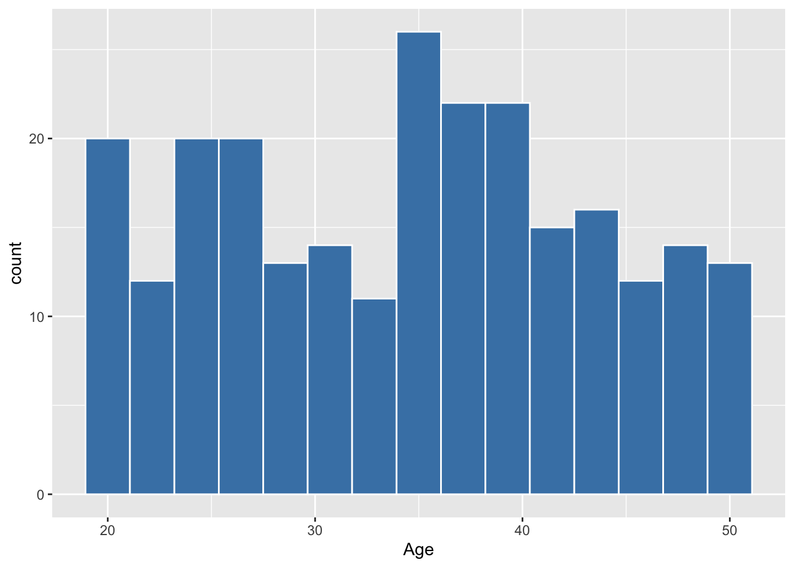
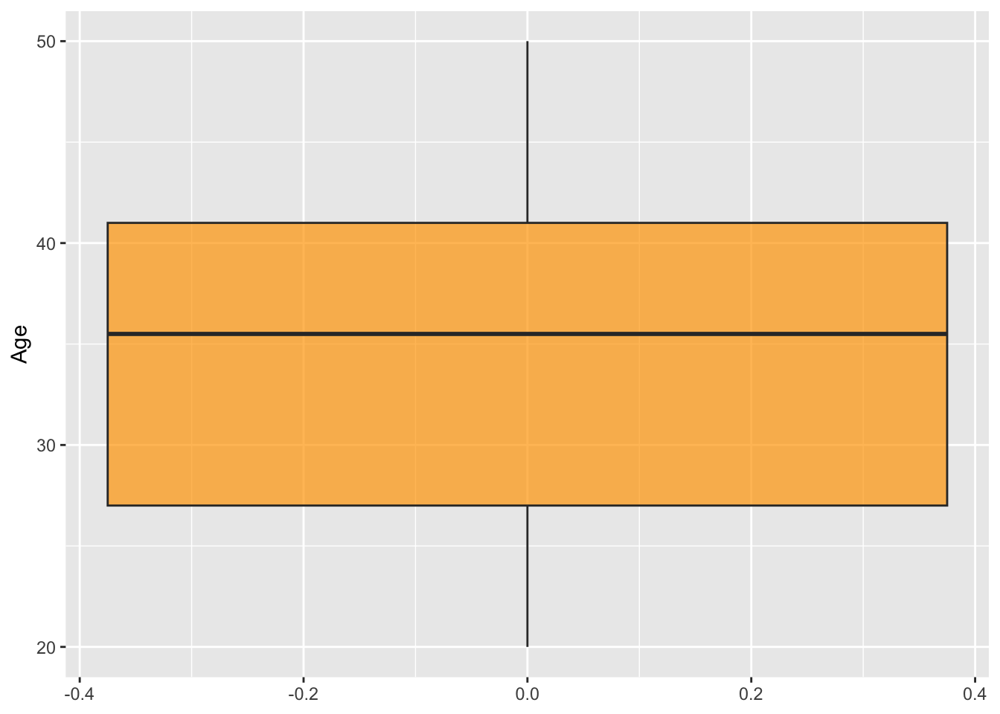
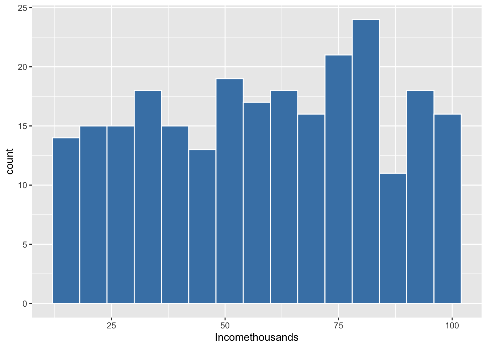
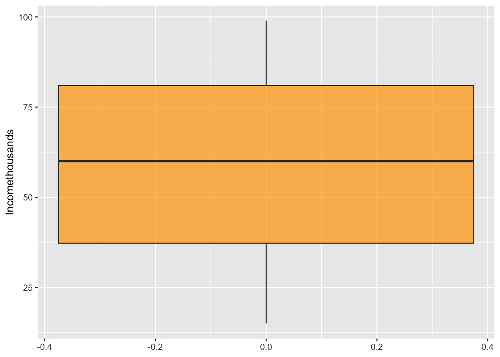
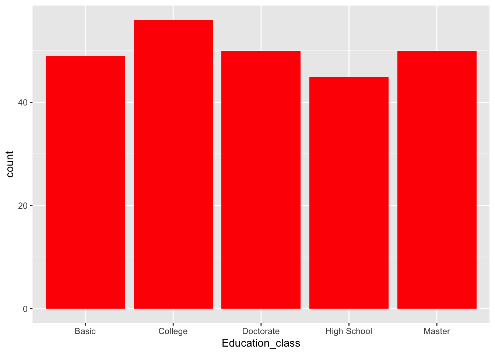
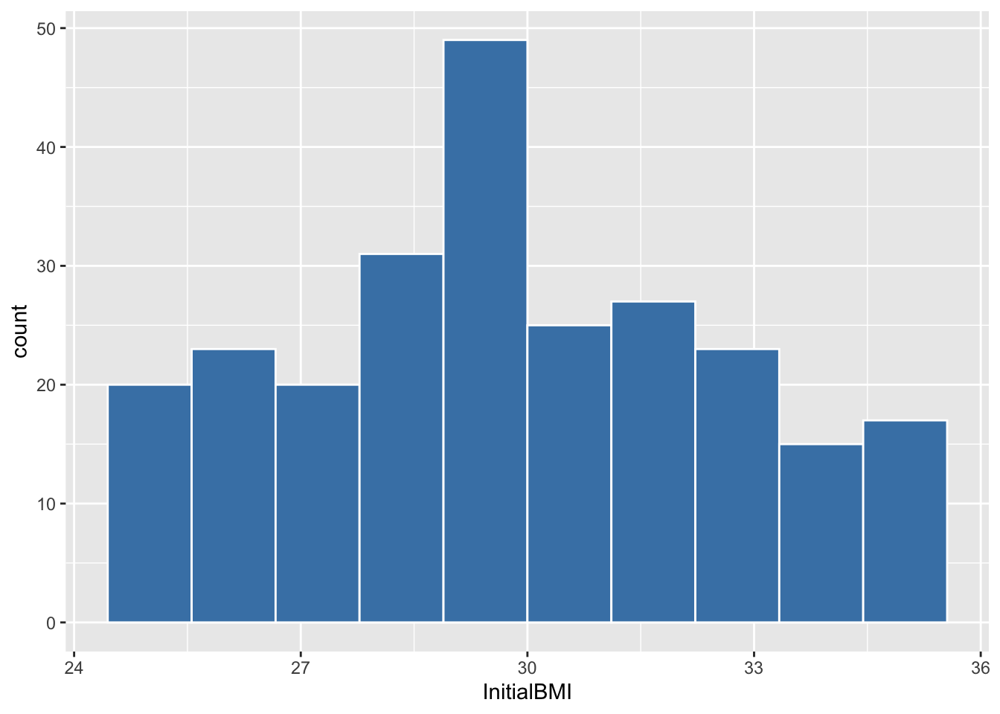
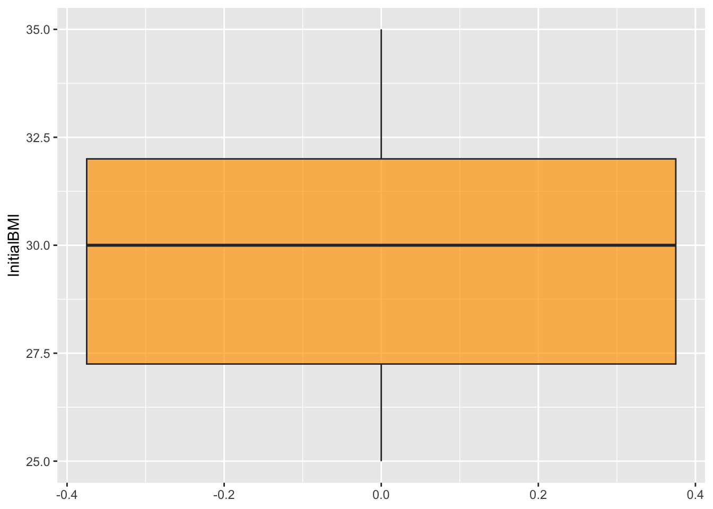
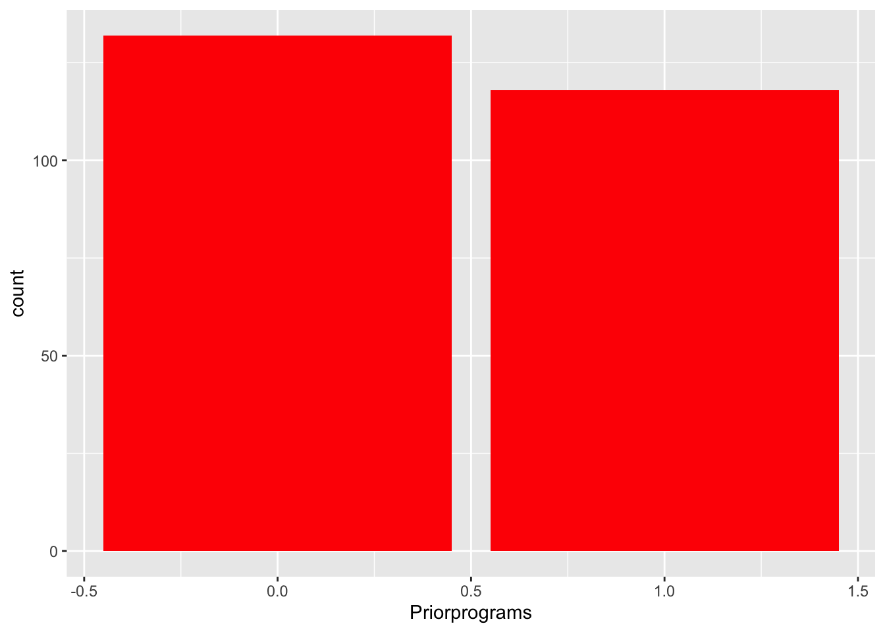
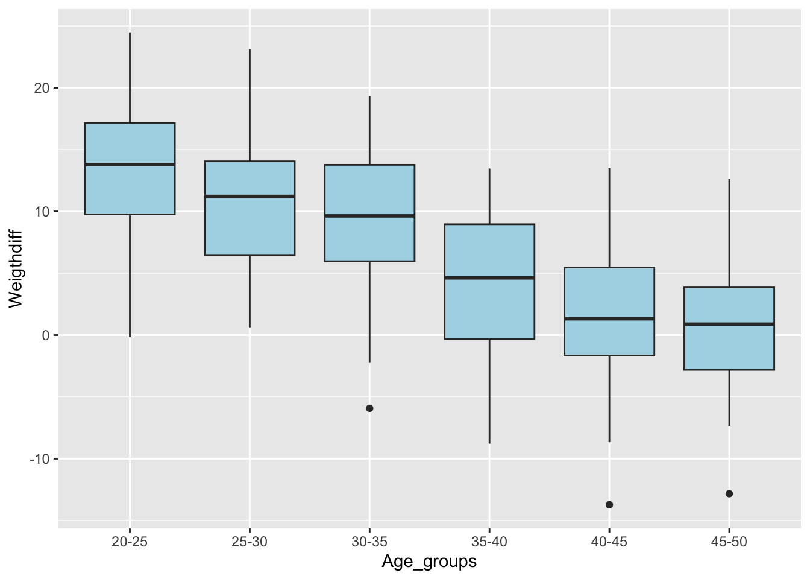
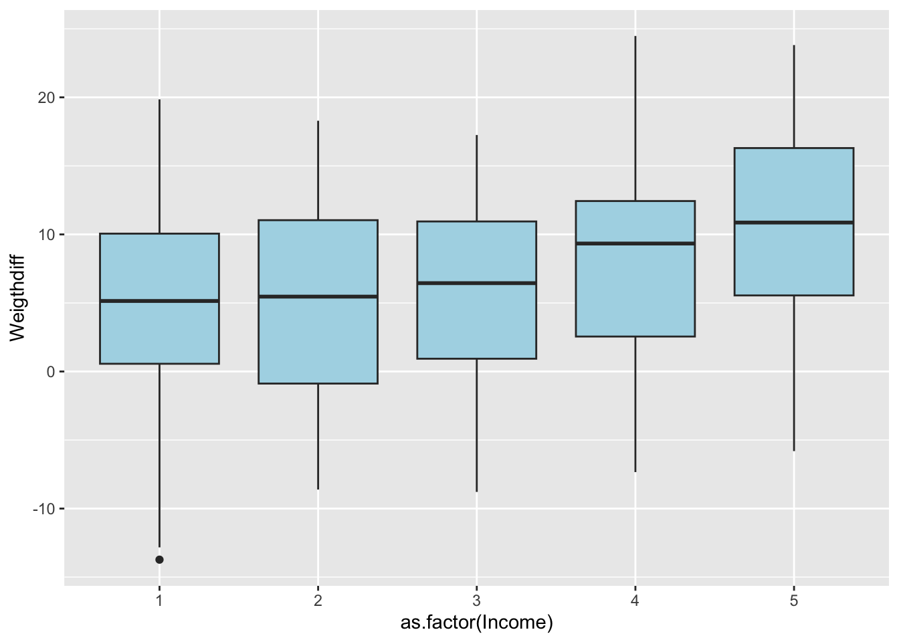

library(tidyverse)
library(ggplot2)
library(dplyr)
library(tibble)
library(lsr)2023-exam
Libraries
Dataset
data = read.csv(file = "DataExam2324.csv",header = T,sep = ";",dec = ",")Remove NAs
data <-
data |>
drop_na()Exam Questions
1. Describe the 250 patient’s sample defining how is the typical patient in the sample and main features of the distributions for relevant variables (age, income, education, initial BMI,Priorprograms…)
summary(data) InitialBMI Education Income Age
Min. :25.00 Min. :1.000 Min. :1.000 Min. :20.00
1st Qu.:27.25 1st Qu.:2.000 1st Qu.:2.000 1st Qu.:27.00
Median :30.00 Median :3.000 Median :3.000 Median :35.50
Mean :29.83 Mean :3.028 Mean :3.048 Mean :34.58
3rd Qu.:32.00 3rd Qu.:4.000 3rd Qu.:4.000 3rd Qu.:41.00
Max. :35.00 Max. :5.000 Max. :5.000 Max. :50.00
Priorprograms Incomethousands Weeksintheprogram Workouts
Min. :0.000 Min. :15.00 Min. :1.000 Min. :0.000
1st Qu.:0.000 1st Qu.:37.25 1st Qu.:3.000 1st Qu.:1.000
Median :0.000 Median :60.00 Median :5.000 Median :2.000
Mean :0.472 Mean :59.11 Mean :4.844 Mean :2.584
3rd Qu.:1.000 3rd Qu.:81.00 3rd Qu.:7.000 3rd Qu.:4.000
Max. :1.000 Max. :99.00 Max. :8.000 Max. :5.000
newbmi Prescription Weigthdiff Recommendation
Min. :19.24 Min. :0.000 Min. :-13.727 Min. :0.000
1st Qu.:24.61 1st Qu.:0.000 1st Qu.: 1.337 1st Qu.:0.000
Median :27.26 Median :0.000 Median : 7.124 Median :0.000
Mean :27.41 Mean :0.416 Mean : 6.978 Mean :0.364
3rd Qu.:30.11 3rd Qu.:1.000 3rd Qu.: 12.391 3rd Qu.:1.000
Max. :38.44 Max. :1.000 Max. : 24.478 Max. :1.000 The typical (median) patient is a 35–36-year-old individual with an initial BMI of 30, a college education, and an annual income between $25,000 and $50,000. This person has not participated in previous programs, reports an income of $60,000 (suggesting a possible inconsistency between the Income and Incomethousand variables), stays in the program for 5 weeks, and exercises 2 hours per week. After the program, their BMI decreases to 27.26, corresponding to a weight loss of approximately 7.1 kg. The patient does not take any medication and would not recommend the program.
Age
This is a discrete quantitative variable. Since it takes on many # different values, it can be effectively visualized using a histogram.
ggplot(data, aes(x = Age)) +
geom_histogram(bins=15, fill="steelblue",
color="white") 
ggplot(data, aes(y = Age)) +
geom_boxplot(fill="orange", alpha=0.7) 
Through the summary statistics, histogram, and boxplot, we can see that the minimum age is 20 and the maximum is 50. The ages are distributed quite heterogeneously, with some ages being more frequent than others and no clear pattern of uniformity. The data do not follow a normal distribution. From the boxplot, no outliers are observed, and the distribution appears to be slightly left-skewed (the mean is lower than the median).
Incomethousand
quantitative cont. variable
ggplot(data, aes(x = Incomethousands)) +
geom_histogram(bins=15, fill="steelblue",
color="white") 
ggplot(data, aes(y = Incomethousands)) +
geom_boxplot(fill="orange", alpha=0.7)
Based on the summary statistics, histogram, and boxplot, we can observe that incomes are distributed in a roughly uniform manner, except for a few values. Incomes around $40,000 and $70,000 are less frequent, while the most common (modal) interval is surprisingly around $100,000. The overall distribution is fairly uniform and differs from a normal distribution. Nevertheless, it shows a good degree of symmetry (as seen in the boxplot) and no apparent outliers.
Education
qualitative variable.
data$Education_class = case_when(
data$Education == 1 ~ "Basic",
data$Education == 2 ~ "High School",
data$Education == 3 ~ "College",
data$Education == 4 ~ "Master",
data$Education == 5 ~ "Doctorate"
)
ggplot(data, aes(x=Education_class)) +
geom_bar(fill="Red") 
Regarding education level, the most common category is College, while High School is the least common. Nevertheless, the frequencies across categories are fairly similar.
Initial BMI
continuous quantitative variable
ggplot(data, aes(x = InitialBMI)) +
geom_histogram(bins=10, fill="steelblue",
color="white") 
ggplot(data, aes(y = InitialBMI)) +
geom_boxplot(fill="orange", alpha=0.7) 
Initial BMI values are fairly homogeneous, although their frequency tends to increase as BMI rises. Two noticeable peaks are observed around BMI values of 28 and 35. The minimum and maximum values are 25 and 35, respectively. The distribution appears to be slightly left-skewed, with no apparent outliers.
Prior Programs
Categorical data
ggplot(data, aes(x=Priorprograms)) +
geom_bar(fill="Red")
Approximately half of the sample has participated in previous programs, while the other half has not. However, those who have not participated in prior programs are slightly more numerous. According to the summary statistics (mean), 47.2% of participants have taken part in previous programs.
2. Give ranges for mean weight loss of potential patients in different age groups and different income categories.
# Create different age groups
data$Age_groups = case_when(
data$Age <= 25 ~ "20-25",
data$Age > 25 & data$Age <= 30 ~ "25-30",
data$Age > 30 & data$Age <= 35 ~ "30-35",
data$Age > 35 & data$Age <= 40 ~ "35-40",
data$Age > 40 & data$Age <= 45 ~ "40-45",
data$Age > 45 & data$Age <= 50 ~ "45-50"
)
# We can slightly modify the CI function to include it in summarise_at
CI_m_lower <- function(x, ci = 0.95) {
standard_deviation <- sd(x)
sample_size <- length(x)
Margin_Error <- abs(qt((1-ci)/2,df=sample_size-1))* standard_deviation/sqrt(sample_size)
lower <- mean(x) - Margin_Error
return(lower = lower)
}
CI_m_upper <- function(x, ci = 0.95) {
standard_deviation <- sd(x)
sample_size <- length(x)
Margin_Error <- abs(qt((1-ci)/2,df=sample_size-1))* standard_deviation/sqrt(sample_size)
upper <- mean(x) + Margin_Error
return(upper = upper)
}
df_grouped_byage <- group_by(data,Age_groups)
df_summary_byage <- df_grouped_byage %>%
summarise_at(vars(Weigthdiff),
list(avg=mean,median=median,std=sd,
ci_l=CI_m_lower,ci_u=CI_m_upper))
df_summary_byage# A tibble: 6 × 6
Age_groups avg median std ci_l ci_u
<chr> <dbl> <dbl> <dbl> <dbl> <dbl>
1 20-25 13.1 13.8 5.61 11.6 14.7
2 25-30 10.4 11.2 5.50 8.54 12.2
3 30-35 9.57 9.64 5.67 7.65 11.5
4 35-40 4.35 4.62 5.62 2.83 5.87
5 40-45 1.95 1.31 6.25 -0.166 4.06
6 45-50 0.723 0.881 5.41 -1.16 2.61ggplot(data, aes(x = Age_groups, y = Weigthdiff)) +
geom_boxplot(fill="lightblue") 
As age increases, the expected amount of weight loss decreases (around 13–14 kilograms for younger participants compared to less than 1 kilogram for older ones. The standard deviation (i.e., the dispersion) remains fairly consistent across age groups.
df_grouped_byincome <- group_by(data,Income)
df_summary_byincome <- df_grouped_byincome %>% # Mean and sd of var1 in each group
summarise_at(vars(Weigthdiff), # You can add more variables!!!
list(avg=mean,median=median,std=sd,
ci_l=CI_m_lower,ci_u=CI_m_upper))
df_summary_byincome# A tibble: 5 × 6
Income avg median std ci_l ci_u
<int> <dbl> <dbl> <dbl> <dbl> <dbl>
1 1 5.10 5.14 7.82 2.80 7.40
2 2 5.25 5.46 6.92 3.32 7.18
3 3 5.76 6.44 6.71 3.77 7.75
4 4 7.87 9.33 6.35 6.10 9.64
5 5 10.5 10.9 7.17 8.55 12.5 ggplot(data, aes(x = as.factor(Income), y = Weigthdiff)) +
geom_boxplot(fill="lightblue") 
This time, the relationship appears to be the opposite: participants with higher incomes tend to experience greater weight loss. Although the difference among the first three income groups is almost negligible, for the highest earners, the weight loss can be nearly twice as large.
3. Talking about the proportion of potential recommendations of the program, Is this proportion different forhighly educated patients (master and doctorate)?
data_master = data[which(data$Education_class == "Master"),]
data_doctorate = data[which(data$Education_class == "Doctorate"),]
(prop_reccom_master = mean(data_master$Recommendation))[1] 0.48(prop_reccom_doctorate = mean(data_doctorate$Recommendation))[1] 0.42# At first glance, the proportions appear to differ.
# But, is that difference statistically significant? Let’s find out.
# Option 1: Using confidence intervals
CI_p <- function(x, ci = 95){
`%>%` <- magrittr::`%>%`
vcat<-na.omit(x)
p<-mean(x)
standard_deviation <- sqrt(p*(1-p))
sample_size <- length(x)
Margin_Error <- abs(qnorm((1-ci)/2))* standard_deviation/sqrt(sample_size)
df_out <- data.frame( sample_size=length(x), p,
Margin_Error=Margin_Error,
'CI lower limit'=(p - Margin_Error),
'CI Upper limit'=(p + Margin_Error)) %>%
tidyr::pivot_longer(names_to = "Measurements", values_to ="values", 1:5 )
return(df_out)
}
CI_p(data_master$Recommendation, ci=0.95) # A tibble: 5 × 2
Measurements values
<chr> <dbl>
1 sample_size 50
2 p 0.48
3 Margin_Error 0.138
4 CI.lower.limit 0.342
5 CI.Upper.limit 0.618CI_p(data_doctorate$Recommendation, ci=0.95) # A tibble: 5 × 2
Measurements values
<chr> <dbl>
1 sample_size 50
2 p 0.42
3 Margin_Error 0.137
4 CI.lower.limit 0.283
5 CI.Upper.limit 0.557We aim to test the following hypothesis:
H0: p_master = p_doctorate
H1: p_master /= p_doctorate
Using a 95% confidence interval, we find that the interval for Master’s graduates is (0.342, 0.618), while for Doctorate graduates it is (0.283, 0.557). Since the intervals overlap, although the recommendation proportions appear different in our sample, there may be no difference in the population as a whole. Therefore, we do not have sufficient evidence to reject H_0.
# Option 2: Using t-test:
var.test(data_master$Recommendation, data_doctorate$Recommendation, alternative = "two.sided") #first step: test for equal variances
F test to compare two variances
data: data_master$Recommendation and data_doctorate$Recommendation
F = 1.0246, num df = 49, denom df = 49, p-value = 0.9325
alternative hypothesis: true ratio of variances is not equal to 1
95 percent confidence interval:
0.5814534 1.8055922
sample estimates:
ratio of variances
1.024631 t.test(data_master$Recommendation, y=data_doctorate$Recommendation, alternative="two.sided", mu=0, var.equal=TRUE)
Two Sample t-test
data: data_master$Recommendation and data_doctorate$Recommendation
t = 0.59805, df = 98, p-value = 0.5512
alternative hypothesis: true difference in means is not equal to 0
95 percent confidence interval:
-0.1390937 0.2590937
sample estimates:
mean of x mean of y
0.48 0.42 Since the p-value is 0.5512, for the usual significance levels (alpha = 0.01, 0.05, 0.1), we do not have sufficient evidence to reject H0.
4. Would the mean BMI for potential patients decrease significantly during the program?
Here, we want to test whether the program leads to a significant reduction in BMI, that is:
H0: mu_BMI_prior <= mu_BMI_post (Post-program BMI is greater than or equal to pre-program BMI = no weight loss)
H1: mu_BMI_prior > mu_BMI_post. (Post-program BMI is lower than pre-program BMI = weight loss)
In this case, the means are paired: for each individual, we have both the before and after measurements.
t.test(data$InitialBMI, y= data$newbmi, paired=TRUE, alternative="greater")
Paired t-test
data: data$InitialBMI and data$newbmi
t = 15.208, df = 249, p-value < 2.2e-16
alternative hypothesis: true mean difference is greater than 0
95 percent confidence interval:
2.1524 Inf
sample estimates:
mean difference
2.41452 The p-value is effectively 0, providing strong evidence to reject H0. We can conclude that participation in the program leads to weight loss.
5. Would the potential proportion of recommendations vary with education, income category and the interaction ofboth?
data_df_grouped_income_educ <- group_by(data,Income,Education_class)
data_df_summary_income_educ <-data_df_grouped_income_educ %>%
summarise_at(vars(Recommendation),
list(avg=mean,stde=sd))
data_df_summary_income_educ# A tibble: 25 × 4
# Groups: Income [5]
Income Education_class avg stde
<int> <chr> <dbl> <dbl>
1 1 Basic 0 0
2 1 College 0.182 0.405
3 1 Doctorate 0.273 0.467
4 1 High School 0.182 0.405
5 1 Master 0.556 0.527
6 2 Basic 0.222 0.428
7 2 College 0.6 0.548
8 2 Doctorate 0.5 0.535
9 2 High School 0 0
10 2 Master 0.333 0.5
# ℹ 15 more rowsOverall, we can observe considerable variability in the proportion of recommendations, both across educational levels and income groups. The recommendation proportion ranges from 0 to 0.6. Let’s further examine the potential relationship using ANOVA.
# Compute the analysis of variance
res.aov <- aov(Recommendation ~ Income*Education_class, data = data)
# Summary of the analysis
summary(res.aov) Df Sum Sq Mean Sq F value Pr(>F)
Income 1 2.96 2.9646 13.672 0.00027 ***
Education_class 4 2.39 0.5968 2.752 0.02879 *
Income:Education_class 4 0.48 0.1212 0.559 0.69271
Residuals 240 52.04 0.2168
---
Signif. codes: 0 '***' 0.001 '**' 0.01 '*' 0.05 '.' 0.1 ' ' 1We can observe that, at a significance level of alpha = 0.05, both income and education level are relevant factors for studying the proportion of recommendations. In contrast, their interaction does not appear to be a significant factor.
6. Could you say if there is a relation between the potential recommendation of the program and the prior enrollmentof the patient in other weight loss programs?
Here, we are asked about a possible non-monotonic association (presence/absence) between recommendation and prior enrollment in other programs. We can construct a contingency table to check whether a dependency exists.
# We create the contingency table.
ConTab= table("Reccom"=data$Recommendation,"Prior"=data$Priorprograms)
# We create a table of relative frequencies conditioned on prior program participation.
prop.table(ConTab,margin = 2) Prior
Reccom 0 1
0 0.6136364 0.6610169
1 0.3863636 0.3389831We can observe that there is no strong relationship between prior program participation and giving a recommendation. However, those who have previously participated in a program tend to recommend it slightly more, although the difference is very small. We check it using the Chi-squared test of independence:
H0: the variables are independent
H1: there is a dependency relationship
chisq.test(ConTab)
Pearson's Chi-squared test with Yates' continuity correction
data: ConTab
X-squared = 0.41684, df = 1, p-value = 0.5185Since the p-value is 0.5185, we do not have sufficient evidence to reject H0; there is no relationship between Recommendation and Priorprograms.
cramersV(ConTab)[1] 0.04083318The Cramér’s V value is very low (0.0408), indicating a very weak association.
7. Find a predictive procedure able to give the expected weight loss during the program as a function of relevantinformation on the patient.
Here, we are asked to develop a predictive model for weight loss (Weigthdiff). We will build a multiple linear regression model and aim to identify the best possible model. To avoid multicollinearity issues, we remove variables that are redundant:
data$Education = NULL
data$Income = NULL
data$Age_groups = NULL
# We start by building a model with all explanatory variables.
model = lm(Weigthdiff~. , data = data)
summary(model)
Call:
lm(formula = Weigthdiff ~ ., data = data)
Residuals:
Min 1Q Median 3Q Max
-1.430e-12 -1.178e-14 5.720e-15 2.098e-14 1.904e-13
Coefficients:
Estimate Std. Error t value Pr(>|t|)
(Intercept) 2.252e-14 7.774e-14 2.900e-01 0.7723
InitialBMI 2.890e+00 8.953e-15 3.228e+14 <2e-16 ***
Age -2.812e-15 1.439e-15 -1.954e+00 0.0519 .
Priorprograms -1.535e-14 1.399e-14 -1.097e+00 0.2736
Incomethousands -1.418e-16 2.529e-16 -5.610e-01 0.5755
Weeksintheprogram 3.383e-15 4.667e-15 7.250e-01 0.4692
Workouts 9.144e-15 6.253e-15 1.462e+00 0.1450
newbmi -2.890e+00 8.585e-15 -3.366e+14 <2e-16 ***
Prescription -1.445e-14 1.265e-14 -1.142e+00 0.2545
Recommendation -3.076e-14 2.166e-14 -1.420e+00 0.1569
Education_classCollege -1.038e-14 2.087e-14 -4.970e-01 0.6194
Education_classDoctorate 1.223e-14 2.486e-14 4.920e-01 0.6234
Education_classHigh School -1.560e-15 2.042e-14 -7.600e-02 0.9392
Education_classMaster 1.285e-14 2.221e-14 5.780e-01 0.5635
---
Signif. codes: 0 '***' 0.001 '**' 0.01 '*' 0.05 '.' 0.1 ' ' 1
Residual standard error: 9.681e-14 on 236 degrees of freedom
Multiple R-squared: 1, Adjusted R-squared: 1
F-statistic: 1.076e+29 on 13 and 236 DF, p-value: < 2.2e-16# We see that only InitialBMI, Age, newbmi, and WeightDiff are relevant.
# We select these variables.
model_2 = lm(Weigthdiff~. , data = data[,c(1,2,7,9)])
summary(model_2)
Call:
lm(formula = Weigthdiff ~ ., data = data[, c(1, 2, 7, 9)])
Residuals:
Min 1Q Median 3Q Max
-1.479e-12 -4.430e-15 6.020e-15 1.611e-14 1.930e-13
Coefficients:
Estimate Std. Error t value Pr(>|t|)
(Intercept) -5.242e-14 7.040e-14 -7.450e-01 0.457
InitialBMI 2.890e+00 3.596e-15 8.038e+14 <2e-16 ***
Age -1.247e-15 8.833e-16 -1.412e+00 0.159
newbmi -2.890e+00 3.111e-15 -9.290e+14 <2e-16 ***
---
Signif. codes: 0 '***' 0.001 '**' 0.01 '*' 0.05 '.' 0.1 ' ' 1
Residual standard error: 9.633e-14 on 246 degrees of freedom
Multiple R-squared: 1, Adjusted R-squared: 1
F-statistic: 4.708e+29 on 3 and 246 DF, p-value: < 2.2e-16# We see that Age is not relevant in this new model, so we remove it.
model_3 = lm(Weigthdiff~. , data = data[,c(1,7,9)])
summary(model_3)
Call:
lm(formula = Weigthdiff ~ ., data = data[, c(1, 7, 9)])
Residuals:
Min 1Q Median 3Q Max
-1.499e-12 -3.440e-15 6.140e-15 1.437e-14 1.876e-13
Coefficients:
Estimate Std. Error t value Pr(>|t|)
(Intercept) -8.118e-14 6.217e-14 -1.306e+00 0.193
InitialBMI 2.890e+00 3.085e-15 9.367e+14 <2e-16 ***
newbmi -2.890e+00 2.460e-15 -1.175e+15 <2e-16 ***
---
Signif. codes: 0 '***' 0.001 '**' 0.01 '*' 0.05 '.' 0.1 ' ' 1
Residual standard error: 9.71e-14 on 247 degrees of freedom
Multiple R-squared: 1, Adjusted R-squared: 1
F-statistic: 6.95e+29 on 2 and 247 DF, p-value: < 2.2e-16We obtain a model that can predict weight loss using both the old and new BMI, but this is trivial. Naturally, knowing this difference makes it obvious what the weight loss is, since BMI = weight / height^2. Assuming the person’s height remains constant, the difference in BMI is: (old weight - current weight) / height^2 = WeightDiff / height^2, so WeightDiff = height^2 * old BMI - height^2 * new BMI.
Therefore, we will assume we are at the beginning of the program, knowing all the information except the new BMI, in order to predict the expected weight loss.
model_4 = lm(Weigthdiff~. , data = data[,-c(7)])
summary(model_4)
Call:
lm(formula = Weigthdiff ~ ., data = data[, -c(7)])
Residuals:
Min 1Q Median 3Q Max
-4.9085 -1.3993 -0.0908 1.3965 5.4360
Coefficients:
Estimate Std. Error t value Pr(>|t|)
(Intercept) 9.052267 1.594964 5.676 4.02e-08 ***
InitialBMI -0.040421 0.045785 -0.883 0.3782
Age -0.391521 0.018530 -21.129 < 2e-16 ***
Priorprograms -1.980367 0.277550 -7.135 1.17e-11 ***
Incomethousands 0.006308 0.005515 1.144 0.2538
Weeksintheprogram 1.162937 0.068614 16.949 < 2e-16 ***
Workouts 1.552847 0.092328 16.819 < 2e-16 ***
Prescription 0.061779 0.276696 0.223 0.8235
Recommendation 3.077013 0.429369 7.166 9.70e-12 ***
Education_classCollege 2.754448 0.419781 6.562 3.32e-10 ***
Education_classDoctorate 4.965282 0.437704 11.344 < 2e-16 ***
Education_classHigh School 1.058840 0.441125 2.400 0.0172 *
Education_classMaster 3.206848 0.438625 7.311 4.05e-12 ***
---
Signif. codes: 0 '***' 0.001 '**' 0.01 '*' 0.05 '.' 0.1 ' ' 1
Residual standard error: 2.117 on 237 degrees of freedom
Multiple R-squared: 0.9189, Adjusted R-squared: 0.9148
F-statistic: 223.9 on 12 and 237 DF, p-value: < 2.2e-16We see that, at alpha = 0.05, InitialBMI, Incomethousands, and Prescription are no longer relevant, so we remove them.
model_5 = lm(Weigthdiff~. , data = data[,-c(1,4,7,8)])
summary(model_5)
Call:
lm(formula = Weigthdiff ~ ., data = data[, -c(1, 4, 7, 8)])
Residuals:
Min 1Q Median 3Q Max
-4.9749 -1.4083 -0.0485 1.4175 5.5790
Coefficients:
Estimate Std. Error t value Pr(>|t|)
(Intercept) 8.25906 0.76920 10.737 < 2e-16 ***
Age -0.39281 0.01841 -21.340 < 2e-16 ***
Priorprograms -1.94773 0.27512 -7.079 1.59e-11 ***
Weeksintheprogram 1.17358 0.06722 17.460 < 2e-16 ***
Workouts 1.55388 0.09198 16.894 < 2e-16 ***
Recommendation 3.01158 0.42632 7.064 1.74e-11 ***
Education_classCollege 2.76443 0.41823 6.610 2.47e-10 ***
Education_classDoctorate 4.95260 0.43631 11.351 < 2e-16 ***
Education_classHigh School 0.99916 0.43826 2.280 0.0235 *
Education_classMaster 3.18586 0.43718 7.287 4.54e-12 ***
---
Signif. codes: 0 '***' 0.001 '**' 0.01 '*' 0.05 '.' 0.1 ' ' 1
Residual standard error: 2.114 on 240 degrees of freedom
Multiple R-squared: 0.9182, Adjusted R-squared: 0.9151
F-statistic: 299.3 on 9 and 240 DF, p-value: < 2.2e-16We obtain a model with R^2 = 0.9182, explaining 91.82% of the variability in our variable of interest.